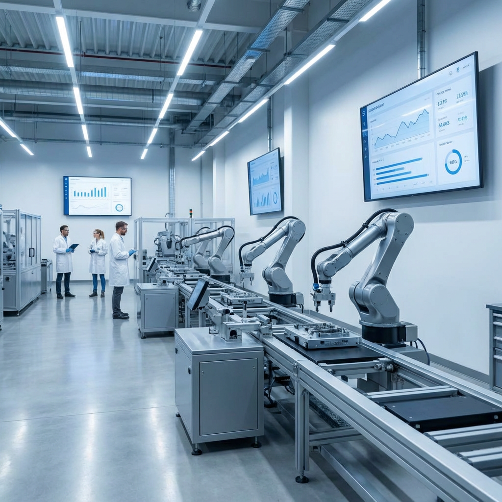

Smart manufacturing & industrial tech
Tinwiser sits at the crossroads of smart manufacturing, Industrial IoT, digital twins, AI in manufacturing, and autonomous operations. We combine uncommon depth across these domains with a disciplined, operator-first mindset — selective engagements, clear scope, and zero tolerance for hand-wavy slide decks.

Sensing & telemetryWho we are
Tinwiser brings together people who live where software, data, and physical operations meet. We work with leaders who expect rigor — architecture that survives the plant, interfaces operators respect, and roadmaps that acknowledge OT reality. Our bias is toward clarity, execution, and long-term partnerships over noise.
About Tinwiser
Operational intelligence
The standard we hold is unified visibility: telemetry, context, and action in one coherent picture — edge through enterprise. That’s the bar we apply when we shape architecture and engagements with industrial partners.
Where we’re focused
These are the industrial and digital themes we organize around — not buzzwords on a chart, but areas where we invest serious attention, methodology, and partnership.
Faster changeovers, sharper quality signals, and production that responds to data — we focus on making plants adaptive and resilient, not brittle.
Connected assets, edge data, and reliable telemetry — bridging OT and IT without drowning operators in noise.
Live models of processes and assets so teams can simulate, compare, and improve before touching the physical line.
Practical AI for inspection, scheduling, and anomaly handling — grounded in real constraints, not slide-deck demos.
Progressive automation and closed-loop systems where humans stay in charge but machines handle the repetitive and the risky.
"Industrial technology fails when it’s clever but fragile. We care about systems that hold up when the shift changes and the network glitches."
— The Tinwiser Team
Get In Touch
Whether you're a partner, collaborator, or just curious — we'd love to hear from you.
Contact Us